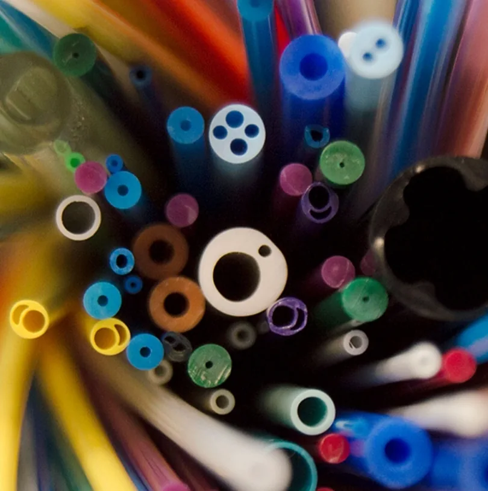

Precision thermoplastic extrusion in partnership with Keystone Medical Technologies, Inc. — from single lumen to complex multi-lumen and multi-layer constructions.

Extrusion Materials
- PEBAX, nylon & Besno nylon, PET
- Polyurethane (Pellethane TPU), Tecoflex, Tecothane
- Hytrel, Kraton (TPE), ChronoPrene
- Polyethylene (HDPE, MDPE, LDPE & LLDPE) and polyolefins
- Tungsten-filled, radiopaque, polyblend & custom compounds
Extrusion Processes
- Single lumen, multi-lumen & profile tubing
- Co-extrusion (multi-layer) and braid coating
- Taper (bump) tubing and over-core extrusion
- Colored and color-striped tubing
- Cut lengths or spooled
Secondary Operations
Tipping, hole drilling, and marking services complete your component so it arrives ready for assembly.
Sizes & Production
- Diameters from .010" to .350"
- Wall thicknesses from .0015" to .075"
- R&D runs through high-volume production
- In-house die design and fabrication
- Balloon tubing and monofilament
Typical Applications
- Catheter shafts, inner and outer jackets
- Multi-lumen tubing for steerable and electrophysiology catheters
- Balloon tubing (parisons) for balloon catheters
- Radiopaque and tungsten-filled tubing for visibility under fluoroscopy
- Variable-stiffness shafts using bump (taper) tubing
Quality & Manufacturing
Keystone Medical Technologies extrudes medical tubing in Somerset, Wisconsin, under an ISO 13485:2016 certified quality system. Common grades, including 35D, 55D, 63D and 72D Pebax, Tecoflex, Pellethane, LDPE, polypropylene and Vestamid, are kept in stock to shorten lead times.
What to Send for a Quote
- Material and durometer, ID, OD and wall (or a drawing)
- Lumen count and layout, plus any taper, color, stripe or radiopaque filler
- Estimated annual volume and prototype quantity
- Target timeline and any validation requirements
A drawing or a rough sketch is fine to start. Send it to Bill and he will route it to the right manufacturer.